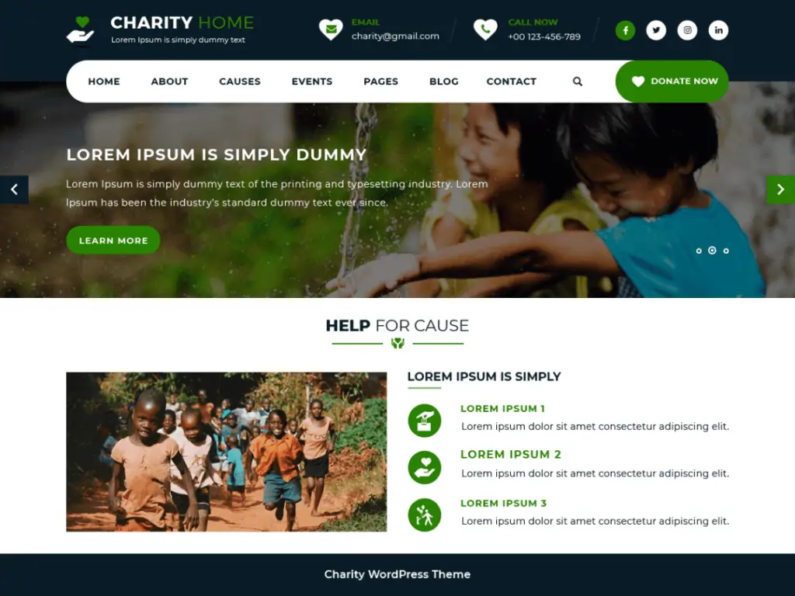

LEARN WORDPRESS DEVELOPMENT

WordPress is a content management system (CMS) that allows you to host and build websites. WordPress contains plugin architecture and a template system, so you can customize any website to fit your business, blog, portfolio, or online store.Despite being the most flexible and powerful platform, WordPress is quite easy to use for beginners.
It comes with a simple dashboard with different menu options listed in the sidebar. You can easily create posts and pages, customize your website design, add navigation menus, and more.WordPress is a content management system, or CMS. It works by combining some core files, a database, files that you add or install, and a dashboard to let you manage the whole thing.WordPress is and continues to be free because it's not owned by a company. ... The WordPress foundation doesn't make any profit from developing or distributing WordPress: it's all voluntary work. WordPress has thousands of plugins, some of which are free and some you have to pay for, but they're all free as in speechWordPress users may install and switch among many different themes.
WordPress in the long run. It is very limited in terms of functionality when compared to WordPress. It has fewer design choices and third-party integrations. The eCommerce and business features are no where close to what other platforms like Shopify and WooCommerce offer.One of the most common questions we answer is, “Can I have my own domain on WordPress.com?” The answer to that question is a resounding YES! We are happy to give you a free website at WordPress.com (something like anyaddress.wordpress.com) but if you want to also use your own domain, you can do that very easily.
Themes allow users to change the look and functionality of a WordPress website without altering the core code or site content. Every WordPress website requires at least one theme to be present. Themes may be directly installed using the WordPress "Appearance" administration tool in the dashboard, or theme folders may be copied directly into the themes directory.[13] WordPress themes are generally classified into two categories: free and premium. Many free themes are listed in the WordPress theme directory (also known as the repository), and premium themes are available for purchase from marketplaces and individual WordPress developers. WordPress users may also create and develop their own custom themes.[14]
WordPress' plugin architecture allows users to extend the features and functionality of a website or blog. As of December 2021, WordPress.org has 59,756 plugins available,[15] each of which offers custom functions and features enabling users to tailor their sites to their specific needs. However, this does not include the premium plugins that are available (approximately 1,500+), which may not be listed in the WordPress.org repositoryPhone apps for WordPress exist for WebOS Android, iOS, Windows Phone and BlackBerry. These applications, designed by Automattic, have options such as adding new blog posts and pages, commenting, moderating comments, replying to comments in addition to the ability to view the stats.